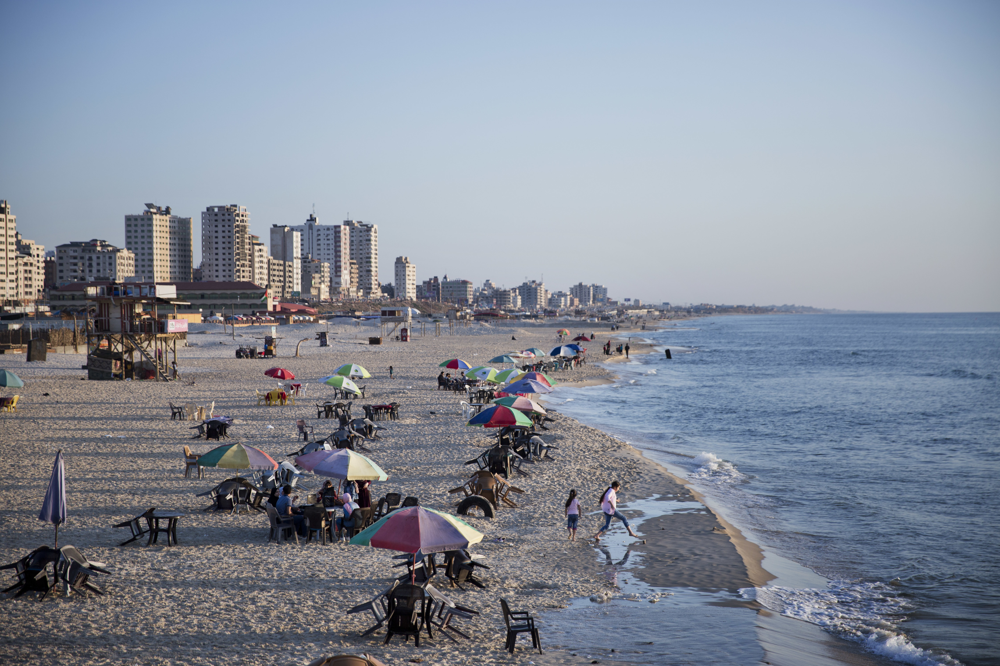

Gaza Strip
Gaza, it is my most favorite city in this world and I really want to visit it since I was child.The City,The people inside it,The nature everyting in it is so beautiful and makes it special.

Gaza's Beach
The Gaza seashore is the only escape for the people living there, especially during this summer, which saw a sharp rise in temperatures that made living conditions even more unbearable for people already living under a suffocating Israeli blockade.